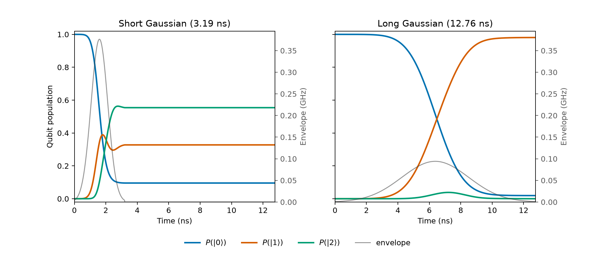
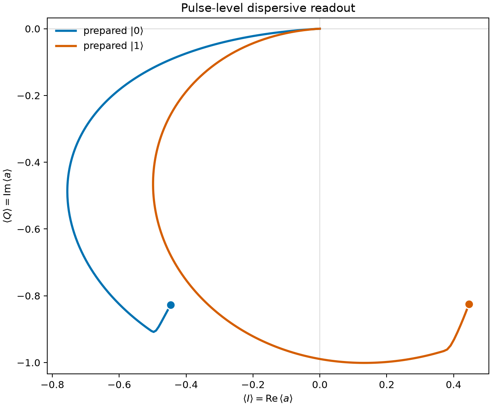

Hello, drive and readout¶
This example couples a Duffing transmon to a lossy resonator. First we compare leakage from two qubit pulses; then we drive the resonator and follow its response for qubit \(|0\rangle\) and \(|1\rangle\).
quchip uses GHz for frequencies and ns for time. The chip and coupling use the RWA in a per-device rotating frame; both drives inherit chip.rwa=True.
import json
import matplotlib.pyplot as plt
import numpy as np
from scipy import integrate
from quchip import (
Capacitive,
ChargeDrive,
Chip,
DuffingTransmon,
Gaussian,
GaussianEdge,
QuantumSequence,
Resonator,
)
resonator_linewidth = 0.001
truncation_threshold = 1.0e-3
qubit = DuffingTransmon(
freq=5.0,
anharmonicity=-0.30,
levels=6,
label="qubit",
)
readout = Resonator(
freq=6.8,
levels=10,
quality_factor=6.8 / resonator_linewidth,
label="readout",
)
chip = Chip(
[qubit, readout],
couplings=[
Capacitive(qubit, readout, g=0.060, rwa=True, label="qubit-readout")
],
frame="rotating",
rwa=True,
)
qubit_line = ChargeDrive(qubit, label="qubit-charge")
readout_line = ChargeDrive(readout, label="readout-charge")
_ = chip.wire(qubit_line, readout_line)
Part 1: Qubit drive and leakage¶
The coupled chip’s dressed transitions set the carrier and the neighboring line to avoid. Ask quchip for \(f_{01}\) and the dressed \(1\rightarrow2\) transition:
f01 = float(chip.freq(qubit))
f12 = float(chip.freq(qubit, when={qubit: 1}))
Both pulses are three-sigma Gaussians with the same nominal-\(\pi\) area. The short pulse has bandwidth \(|f_{12}-f_{01}|\); the four-times-longer pulse is more selective. pi_gaussian rescales each waveform so \(2\pi\int E(t)\,dt=\pi\).
drive_durations = 3.0 / (np.pi * abs(f12 - f01)) * np.array([1.0, 4.0])
def pi_gaussian(duration: float) -> Gaussian:
unit_pulse = Gaussian(duration=duration, sigmas=3.0, amplitude=1.0)
integration_times = np.linspace(0.0, duration, 20001)
unit_area = integrate.trapezoid(
np.asarray(unit_pulse.waveform(integration_times)).real,
integration_times,
)
return Gaussian(
duration=duration,
sigmas=3.0,
amplitude=0.5 / unit_area,
)
drive_pulses = tuple(pi_gaussian(duration) for duration in drive_durations)
drive_times = np.linspace(0.0, drive_durations[-1], 601)
Both pulses start at \(t=0\) from dressed \(|0,0\rangle\). The batch varies duration and amplitude on one shared grid; after the short pulse ends, that trajectory evolves freely.
drive_sequence = QuantumSequence(chip)
drive = drive_sequence.schedule(qubit_line, envelope=drive_pulses[0], freq=f01)
drive_batch = drive_sequence.simulate_batch(
drive_sequence.zip(
drive.vary("duration", drive_durations, name="duration"),
drive.vary(
"amplitude",
[pulse.amplitude for pulse in drive_pulses],
name="amplitude",
),
),
tlist=drive_times,
initial_state=chip.state({qubit: 0, readout: 0}),
progress=False,
truncation_threshold=truncation_threshold,
)
Inspect the batch with Quchip¶
Each batch element is a SimulationResult. With trace_out=readout, plot_populations shows the qubit populations directly. The first result contains the short pulse followed by idle evolution.
drive_batch[0].plot_populations(trace_out=readout)
plt.show()
The second result is the long pulse, which fills the shared window.
drive_batch[1].plot_populations(trace_out=readout)
plt.show()
Customize the comparison¶
For the shared-grid comparison, read \(P_0\), \(P_1\), and \(P_2\) from the batch. Each call returns an array indexed by (pulse, time).
drive_populations = np.asarray(
[drive_batch.population(qubit, level) for level in range(3)]
).real
drive_receipt = {
"drive_plot": "../docs/images/hello_qubit_drive_leakage.png",
"durations_ns": dict(zip(("short", "long"), drive_durations, strict=True)),
"f01_ghz": f01,
"f12_ghz": f12,
"final_p1": dict(
zip(
("short", "long"),
drive_batch.population(qubit, 1, reduce="last"),
strict=True,
)
),
"peak_p2": dict(
zip(
("short", "long"),
drive_batch.population(qubit, 2, reduce="max"),
strict=True,
)
),
}
The panels show the actual scheduled envelopes and \(P(|0\rangle)\), \(P(|1\rangle)\), and \(P(|2\rangle)\). The short pulse reaches the adjacent transition; the long pulse suppresses that leakage.
state_colors = ("#0072B2", "#D55E00", "#009E73")
drive_figure, drive_axes = plt.subplots(
1, 2, figsize=(11.0, 4.8), sharex=True, sharey=True
)
for pulse_index, (axis, name, duration, envelope) in enumerate(
zip(drive_axes, ("short", "long"), drive_durations, drive_pulses, strict=True)
):
for level, color in enumerate(state_colors):
axis.plot(
drive_times, drive_populations[level, pulse_index],
color=color, linewidth=2.0, label=fr"$P(|{level}\rangle)$",
)
envelope_axis = axis.twinx()
envelope_axis.plot(
drive_times,
np.where(
drive_times <= duration, envelope.sample(drive_times, real=True), 0.0
),
color="0.25", linewidth=1.2, alpha=0.55, label="envelope",
)
envelope_axis.set_ylim(0.0, 1.05 * max(pulse.amplitude for pulse in drive_pulses))
envelope_axis.set_ylabel("Envelope (GHz)", color="0.35")
envelope_axis.tick_params(axis="y", colors="0.35")
axis.set(
xlim=(0.0, drive_durations[-1]),
ylim=(-0.02, 1.02),
xlabel="Time (ns)",
)
axis.set_title(f"{name.capitalize()} Gaussian ({duration:.2f} ns)")
if pulse_index == 0:
axis.set_ylabel("Qubit population")
state_handles, state_labels = axis.get_legend_handles_labels()
envelope_handles, envelope_labels = envelope_axis.get_legend_handles_labels()
drive_figure.legend(
state_handles + envelope_handles,
state_labels + envelope_labels,
frameon=False,
loc="lower center",
bbox_to_anchor=(0.5, 0.02),
ncols=4,
)
drive_figure.subplots_adjust(bottom=0.22, wspace=0.30)
print(f"RESULT drive={json.dumps(drive_receipt, sort_keys=True, separators=(',', ':'))}")
drive_figure.savefig(drive_receipt["drive_plot"], dpi=180)
plt.show()
Part 2: Dispersive readout¶
The resonator frequency depends on whether the qubit is in \(|0\rangle\) or \(|1\rangle\). Ask quchip for both conditional frequencies:
readout_frequencies = (
float(chip.freq(readout, when={qubit: 0})),
float(chip.freq(readout, when={qubit: 1})),
)
The readout lasts for the larger of five resonator lifetimes and half the inverse conditional pull, rounded up to the 5 ns grid. Its amplitude is set directly.
readout_time_step = 5.0
readout_duration = readout_time_step * np.ceil(
max(
5.0 / (2.0 * np.pi * resonator_linewidth),
1.0 / (2.0 * abs(readout_frequencies[1] - readout_frequencies[0])),
)
/ readout_time_step
)
readout_times = np.linspace(
0.0,
readout_duration,
int(round(readout_duration / readout_time_step)) + 1,
)
Schedule that pulse and simulate both prepared states in one quchip batch:
readout_sequence = QuantumSequence(chip)
readout_sequence.schedule(
readout_line,
envelope=GaussianEdge(
duration=readout_duration,
edge_duration=40.0,
sigmas=3,
amplitude=0.0012,
),
freq=sum(readout_frequencies) / 2.0,
)
readout_batch = readout_sequence.simulate_batch(
readout_sequence.vary(
"initial_state",
[
chip.state({qubit: 0, readout: 0}),
chip.state({qubit: 1, readout: 0}),
],
name="prepared_qubit",
),
tlist=readout_times,
e_ops=chip.e_ops(readout="a"),
progress=False,
truncation_threshold=truncation_threshold,
)
The solver returns \(\alpha(t)=\langle a\rangle\); its real and imaginary parts trace the IQ response for each prepared state.
alpha = np.asarray(readout_batch.expect("readout"), dtype=complex)
readout_receipt = {
"conditional_resonator_frequencies_ghz": readout_frequencies,
"final_iq_separation": float(abs(alpha[0, -1] - alpha[1, -1])),
"iq_plot": "../docs/images/hello_dispersive_readout_iq.png",
"readout_carrier_ghz": sum(readout_frequencies) / 2.0,
"readout_duration_ns": readout_duration,
"solver": readout_batch[0].solver,
}
Plot both paths on equal \(I/Q\) scales and mark their final points.
iq_figure, iq_axis = plt.subplots(figsize=(7.0, 5.8), layout="constrained")
for prepared_level, color in enumerate(("#0072B2", "#D55E00")):
iq_axis.plot(
alpha[prepared_level].real,
alpha[prepared_level].imag,
color=color,
linewidth=2.2,
label=fr"prepared $|{prepared_level}\rangle$",
)
iq_axis.plot(
alpha[prepared_level, -1].real,
alpha[prepared_level, -1].imag,
marker="o",
markersize=9,
markeredgecolor="white",
markeredgewidth=1.2,
color=color,
linestyle="none",
)
iq_axis.axhline(0.0, color="0.85", linewidth=0.8, zorder=0)
iq_axis.axvline(0.0, color="0.85", linewidth=0.8, zorder=0)
iq_axis.set_xlabel(r"$\langle I\rangle = \mathrm{Re}\,\langle a\rangle$")
iq_axis.set_ylabel(r"$\langle Q\rangle = \mathrm{Im}\,\langle a\rangle$")
iq_axis.set_title("Pulse-level dispersive readout")
iq_axis.set_aspect("equal", adjustable="datalim")
iq_axis.legend(frameon=False, loc="upper left")
print(f"RESULT readout={json.dumps(readout_receipt, sort_keys=True, separators=(',', ':'))}")
iq_figure.savefig(readout_receipt["iq_plot"], dpi=180)
plt.show()
One chip now shows both effects: pulse bandwidth controls leakage, and the qubit state shifts the resonator response.
{kind=link}

The same nominal-pi area produces very different leakage when the Gaussian bandwidth approaches the adjacent dressed transition.¶
{kind=link}

Pulse-level dispersive-readout IQ paths for prepared dressed qubit states \(|0\rangle\) and \(|1\rangle\), with the final points emphasized.¶